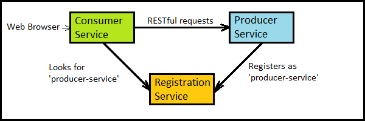
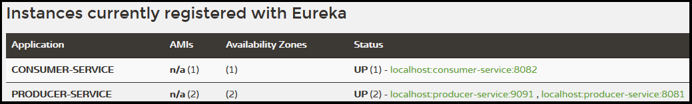
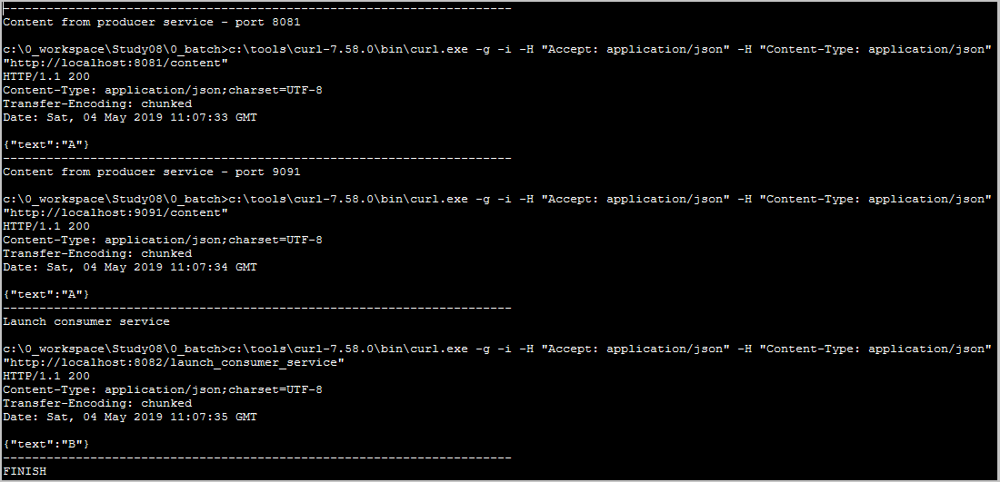
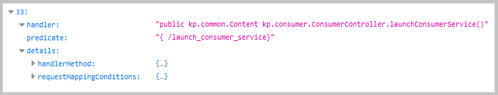

common package
kp.common producer package
kp.producer consumer package
kp.consumer registration package
kp.registration
common package
kp.common producer package
kp.producer consumer package
kp.consumer registration package
kp.registrationJava source code:
common package
kp.common
producer package
kp.producer
consumer package
kp.consumer
registration package
kp.registration
The example uses Spring Boot, Eureka server, Hystrix circuit breaker, and Spring Boot Actuator.
Eureka and Hystrix are from the Spring Cloud Netflix.

Microservices registration, lookup and consuming.
The microservice registration and discovery is done with Eureka server.
The consumer-service is an example of the frontend (application) services.
The producer-service is an example of the backend (business) services.

Screenshot fragment from the Eureka Dashboard
Initial actions:

 1. With batch file "02 run registration.bat" start Eureka registration server.
1. With batch file "02 run registration.bat" start Eureka registration server.
2. With batch file "03 run producer.bat" start producer-service server.
 It registers the first instance of producer-service.
It registers the first instance of producer-service.
3. With batch file "04 run consumer.bat" start consumer-service server.
4. With batch file "05 run producer (9091).bat" start another producer-service server on port 9091.
 It registers the second instance of producer-service.
It registers the second instance of producer-service.
Actions:
1. Execute batch file "06 CURL read.bat".
2. In web browser go to URL http://localhost:8081/content.
It executes producer-service on default port 8081.
3. In web browser go to URL http://localhost:9091/content.
It executes producer-service on explicit port 9091.
4. In web browser go to URL http://localhost:8082/launch_consumer_service.
It executes consumer-service.
 This consumer service starts sequentially two instances of producer-service (round robin load balancing algorithm).
This consumer service starts sequentially two instances of producer-service (round robin load balancing algorithm).

First action result ("06 CURL read.bat"): console log from curl call.
First action result ("06 CURL read.bat"): console log from consumer server.
First action result ("06 CURL read.bat"): console log from first producer server.
First action result ("06 CURL read.bat"): console log from second producer server.

Fragment from "http://localhost:8082/actuator/mappings" response.
Console log from consumer server with first normal response and next fallback response.